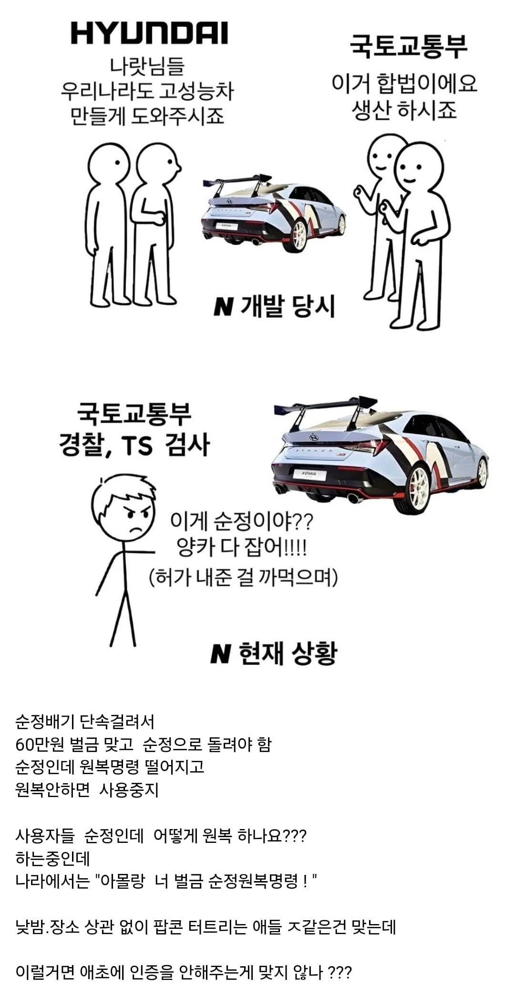

현재 현대N 차주들 상황
댓글
근대 각종슈퍼카 포람페 는 어떻게 타고다니는거야? 훨씬시끄러운데 ㅋㅋㅋ
뿌다다닷
딸배들 배기음이나 단속좀해라 ㅅㅂ
ㄹㅇ아엔은 소음도아님
아파트 단지에 일자로된 단지 도로 있는데 시발 이게 일반도로 하고 이어져있어서 시발련들이 밤 이나 새벽마다 쳐와서 부왕 투다다다 거리는 새끼들 ㄹㅇ 개좆같음 전에 어떤새끼는 5번을 그렇게 왓다갔다 했다가 경찰오고 ㄹㅇ 진짜 새총사서 존나쏘고싶어지더라
진짜 밤 새벽에도 개지랄해서 우리 동네도 다 이갈고잇음
검사 바꾸 먹이고 리콜 때려서 팝콘 막으라는건가
우리나라 진짜 병신인게 전세계 차산업이 양지, 음지 둘다 존재하면서 상호작용으로 발전해옴. 어느정도 선을 두고 그걸 넘으면 규제를 해야지 포르노 막듯이 음지 산업을 송두리째 불법화 해버리니 이미지는 양아치화되고 자동차관련 모임도 굉장히 한정적임
진짜 대가리를 모자걸이로 쓰는 놈들뿐이군
순정타다가 단속걸리면 안그래도 개씹양카타는 차쟁이들이
"예예 나랏님말씀대로 앞으로 소음기박고 조용히 다니겠습니다" 할거같어?
바로 촉매제거 중통직관 풀배기 바로 박으러가지 씹 ㅋㅋㅋㅋㅋ
정보) 실제로 탈것판에는 이 문제로 골머리를 썩다가 차를 팔아버린 개붕이가 있다
걍 행정소송 거는거외엔 수가없지않나
진짜 병신의 나라구나
속도를 200까지 낼수있지만 내면 안되는거랑 비슷한건가
밤에 도로에 ㅈㄹ떠는 차들 다 검사소에서 빠꾸먹었으면 좋겟음 .
자동차의 메카인 독일 일본의 튜닝산업좀 배우고와라 자동차대국으로 성장시키고싶으면
이게 N뿐만 아니라 트럭쪽에서도 이슈된 내용인데
순정인 부품을 싸재라고 꾸득꾸득 우겨서 ㅈ된 트럭기사들 좀 있음
이거 어떤 유튜버가 영상으로 만들고 기사도 나왔을텐데
현대N 차주들 상황 ㄷㄷ
ㅈㄴ 시끄럽긴함 다른 고성능 엔진차들 시끄러운거도 다 잡앗으면 좋겠음